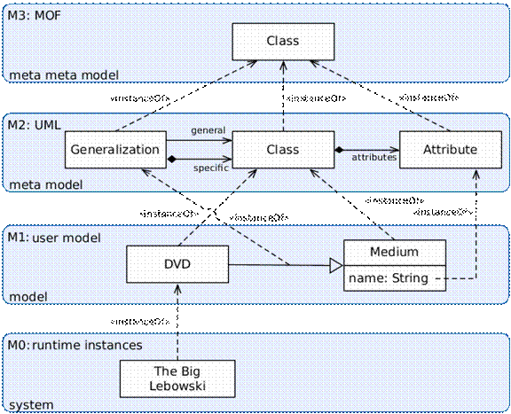

Modeling as a science has greatly benefited from the computational capabilities of the Information Age and has steadily evolved over the past several decades. The development of the Object Modeling Technique (OMT) at GE Research (1,2) and its evolution into the Unified Modeling Language (UML) was a significant milestone. No less significant was the work in description logics (DL) and artificial intelligence, which produced the Knowledge Interchange Format (KIF), the Resource Description Framework (RDF), the Web Ontology Language (OWL), conceptual graphs (CG), and Common Logic (CL). More recent work by the Object Management Group (OMG) has produced the Meta-Object Facility (MOF) and its variants, which promise to unify UML, OWL, and any other modeling language or paradigm (OMG’s MOF). This is an exciting time to be involved in modeling!
UML was born in the software engineering domain. OWL and CL were born in the domain of formal models and logical inference and classification. It is instructive to compare their meta-models. MOF, first and foremost the meta-model of UML, captures four main concepts: 1) classes, 2) associations, 3) datatypes, and 4) packages. OWL models are composed of 1) classes, 2) properties, and 3) instances. The alignment is, however, much closer than it may appear. The MOF architecture has the meta-meta-model or MOF model at layer M3 with UML (for example) at layer M2, an actual UML model at layer M1, and the real-world data at layer M0 (see Figure 1). This M0 real-world data is a software engineer’s version of what an ontologist would call instances.

Figure 1: MOF Layers with Example (after illustration on UML at http://en.wikipedia.org/wiki/Unified_Modeling_Language)
Datatypes exist in OWL as well as in MOF and represent those primitive data constructs that are not unique “instances” of a class. To illustrate, if John has brother Jim and Susan has husband Jim, then (assuming the same Jim) we would have only one instance of Jim in our model and both statements would reference it. However, if John has age 12 years and Susan owns 12 apples, we would not normally say that there is only one number 12 in our model. A datatype allows us to use things like numbers, strings, dates, etc. (XML Schema datatypes) without giving them a unique identifier.
In OWL, concepts (classes, properties, and instances) are identified by a Uniform Resource Identifier (URI) (except for “blank class nodes” which are identified by a system-generated unique identifier for proper local handling). A URI consists of two parts: a namespace and a local name, separated by a “#” symbol. In this way local names are only required to be unique within the namespace. MOF 2 moves in the direction of making identifiers more compatible with OWL by requiring package names to be legal URIs. This makes sense since the concept of a namespace is in many ways similar to the package in MOF. Class names are only required to be unique within the package. Closely related classes will normally be found in the same package just as closely related concepts in OWL will normally be defined in the same namespace. In summary, the basic building blocks of MOF and of OWL are very similar. MOF metamodels of OWL have been constructed under work on the Ontology Definition Metamodel (ODM) (ref OMG ODM). Automatic translation of at least most of UML and OWL models from one to the other is a work in-progress.
There are some fundamental differences between UML and OWL (3). They include: